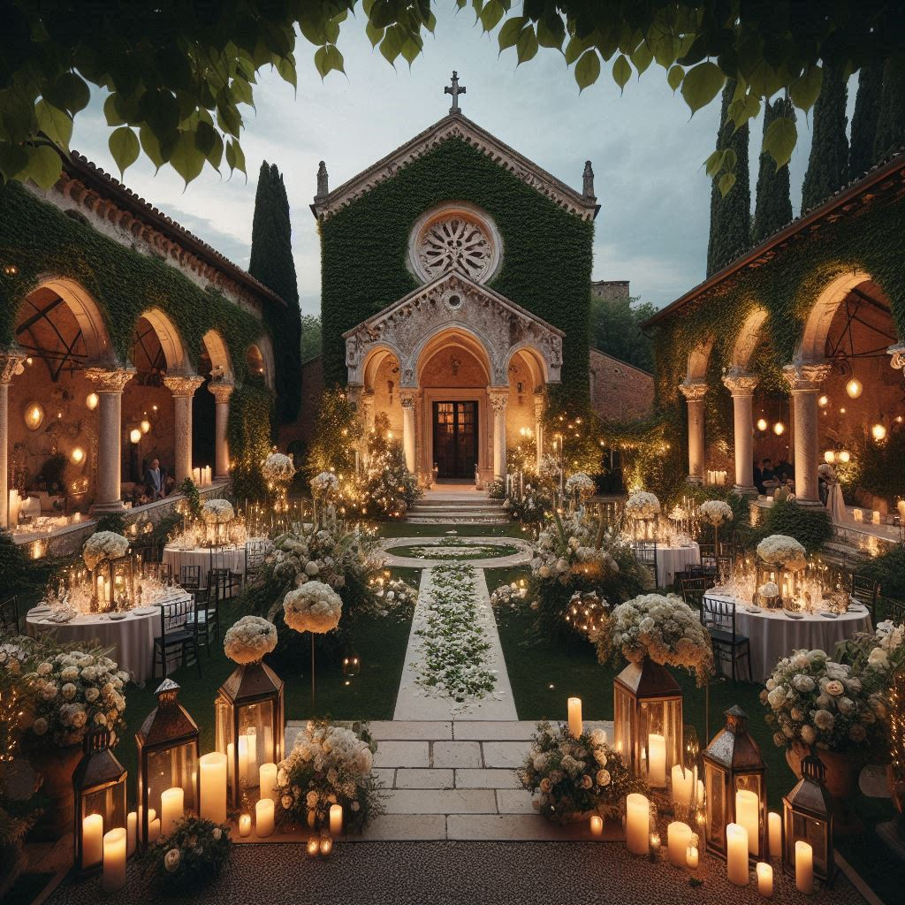
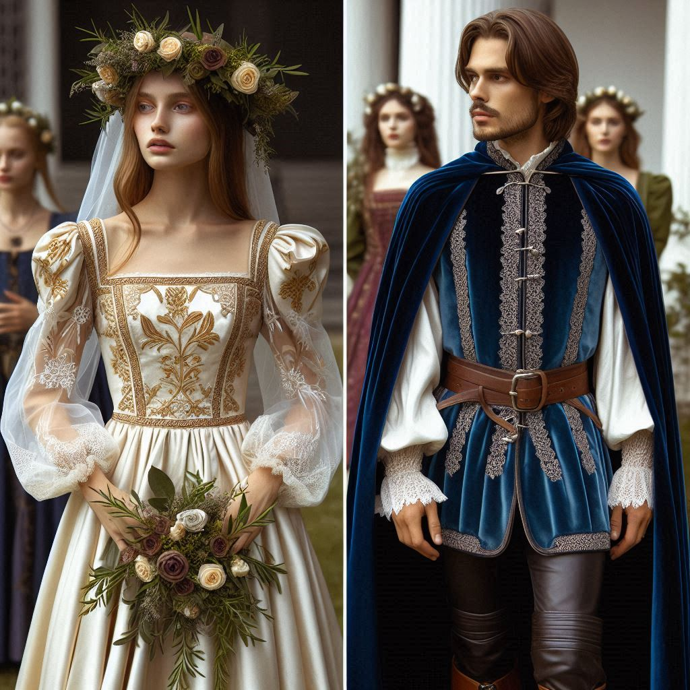
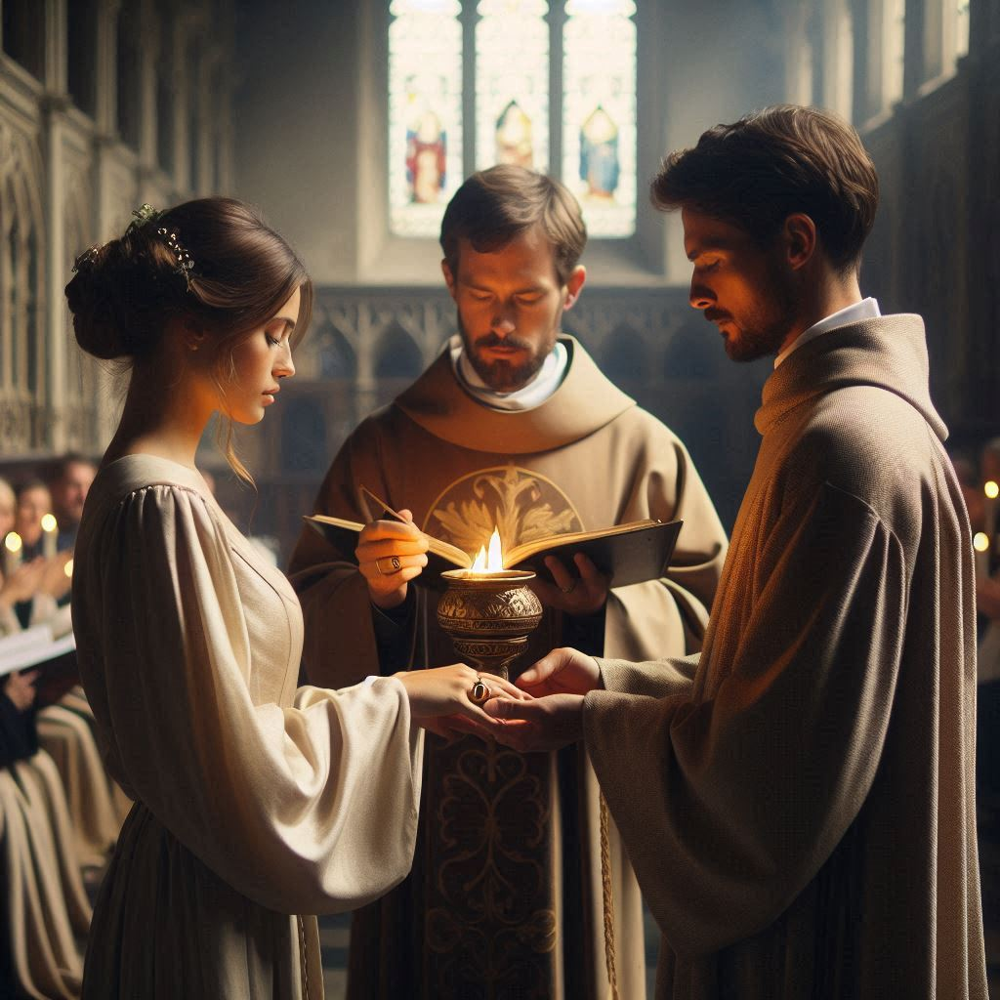

Wedding Plan
Venue

The ceremony takes place in a peaceful chapel just outside Verona, surrounded by lush greenery. Inside, the chapel is decorated with ivy, candles, and white roses, creating a romantic and sacred atmosphere. The reception is held in the courtyard of a grand Veronese villa, with its stone arches, fountains, and open space providing the perfect setting for a magical celebration. Lanterns hang above the tables, and the courtyard glows with soft lights under the stars.
Attire

Juliet wears a flowing ivory silk gown with gold embroidery and lace sleeves, paired with a floral crown of roses and rosemary. Her look symbolizes love and purity. Romeo’s outfit includes a deep blue velvet doublet with silver details, a cape, and leather boots, showing both elegance and loyalty. The guests wear Renaissance-style clothing, adding to the festive and traditional feel of the wedding.
Ceremony

Friar Laurence officiates the private ceremony in the chapel, blessing their gold rings engraved with their initials. The couple holds hands over a flame to symbolize their strong bond and unity. A small choir sings a Renaissance hymn, filling the space with music that reflects the love and hope of their union. The ceremony is quiet and intimate, focusing on the depth of their commitment to each other.
Reception

The courtyard is set with long tables covered in white linens, candles, and garlands of greenery and flowers. The meal includes roasted meats, fresh bread, fruits, pastries, and fine wines from the Verona region. A string quartet plays during dinner, shifting to upbeat Renaissance music for dancing later in the evening. Guests enjoy lively dances and celebrate in the open-air courtyard under lanterns and a starlit sky.
Sources
- Renaissance Magazine – Covers traditions, costumes, and inspirations for Renaissance-themed events.
- The Knot’s Renaissance Wedding Ideas – Here (Search: “Renaissance wedding”).
- Elizabethan Costuming Page – A resource for historically accurate Renaissance attire (Here).
- Texas Renaissance Festival – Offers insights and vendors for Renaissance weddings (Here).
- The Book of the Courtier by Baldassare Castiglione – A firsthand source on Renaissance culture and behavior.